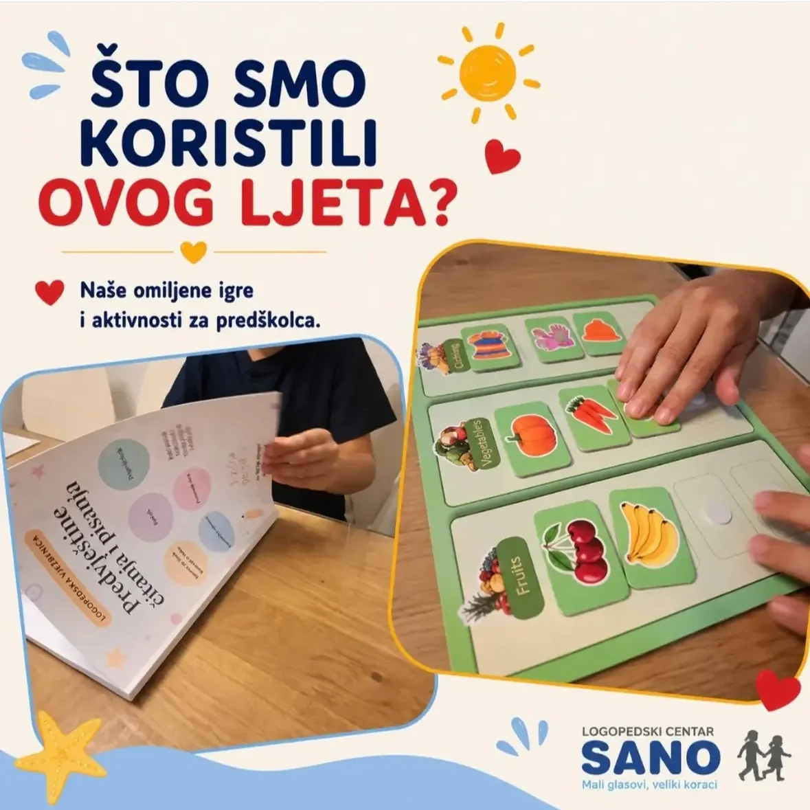
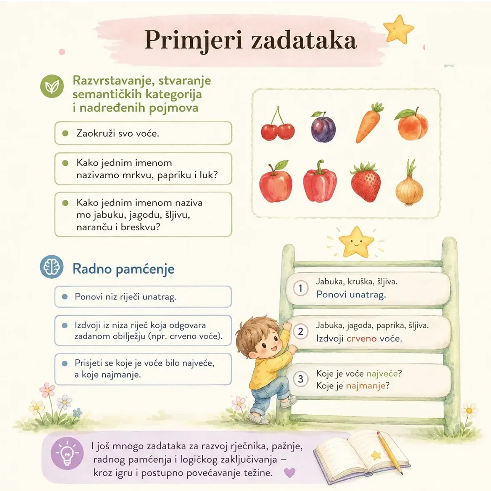

Što smo koristili ovog ljeta?
Razvrstavanje pojmova: jednostavna igra s velikim učinkom.

Što je razvrstavanje prema semantičkim kategorijama?
To je svrstavanje pojmova u skupine koje pripadaju zajedno: voće, povrće, odjeća, životinje, biljke, vozila. Dijete pritom ne uči samo nazive predmeta, nego i nadređeni pojam koji ih povezuje: mrkva, paprika i luk zajedno su povrće.
Upravo taj korak, od pojedinačne riječi do kategorije, organizira djetetov rječnik i omogućuje mu da nove riječi lakše pamti i brže pronalazi.
Što dijete razvija ovom igrom
Kako igrati kod kuće
Nisu vam potrebni posebni materijali. Dovoljne su slikovnice, letak iz trgovine ili predmeti koje već imate.
Primjeri zadataka
Zadaci iz naše vježbenice Predvještine čitanja i pisanja, kojima ove vještine dodatno uvježbavamo.

{{ g.title }}
Postupno povećavajte težinu: počnite s dvije jasno različite kategorije, pa dodajte treću. Kad dijete sigurno razvrstava, uvedite pitanja radnog pamćenja: „ponovi unatrag", „koje je bilo najveće". Kratko i često je bolje od dugo i rijetko.
Želite iste zadatke kod kuće?
Vježbenica „Predvještine čitanja i pisanja" sadrži zadatke za rječnik, semantičke kategorije, radno pamćenje i logičko zaključivanje, kroz igru i postupno povećavanje težine.